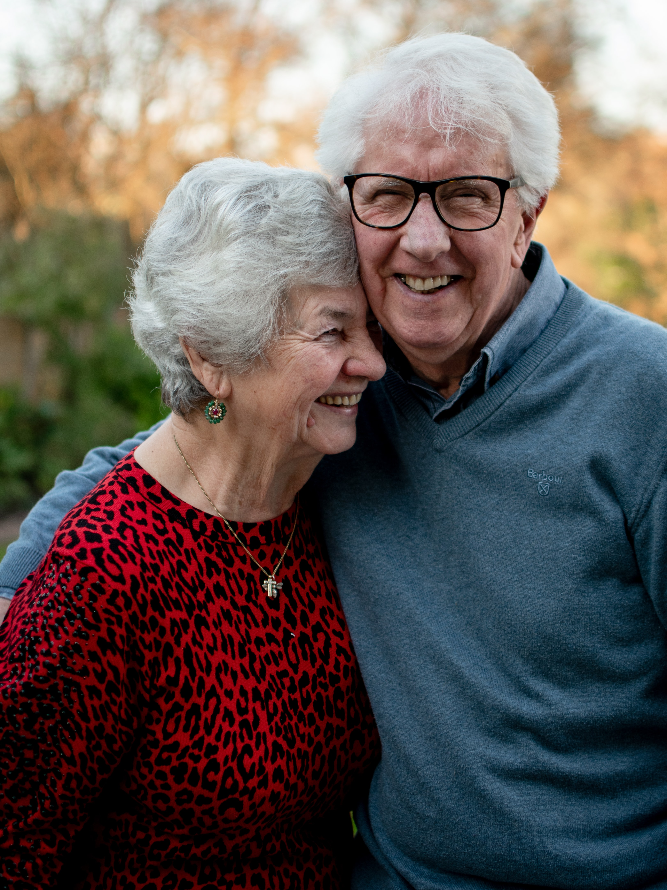

- 헤드헌팅
- 여행사
- 복지
창업이란 무엇인가?
시니어 전문 헤드헨팅
1. 사무분야
초고령사회 일본의 간병 현장에서 요즘 ‘구강 케어’에 대한 관심이 부쩍 커지고 있습니다.
구강 케어가 고령자들의 입 속 건강뿐만 아니라 전신 건강에 미치는 영향이 크다는 연구결과가 잇따라 나오고 있기 때문입니다.
많은 고령자 시설들이 치과 등 전문 기관과 구강케어 협업 체제를 갖추기 시작했고, 구강 케어에 특화한 요양원이 등장해 눈길을 끌고 있습니다.
정책 당국도 입주자들의 구강 관리를 잘하는 고령자 시설에 재정적인 지원을 하는 등 구강 케어를 독려하고 있는 모습입니다.
